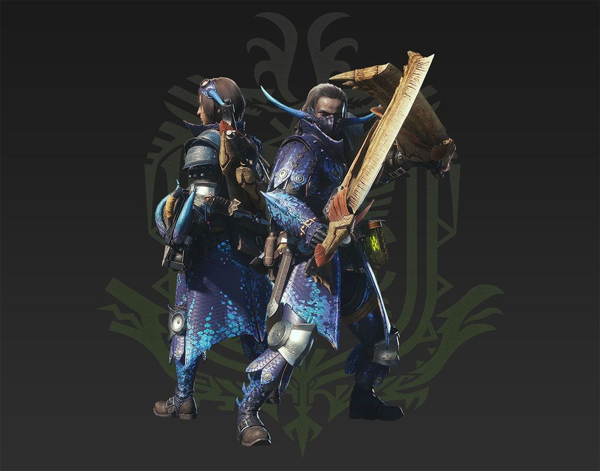
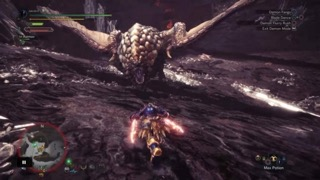
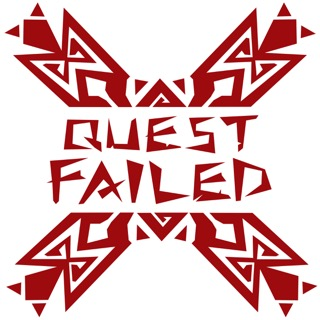

Welcome Hunters!
Greetings Hunters! This website is dedicated to explaining a hunter class I feel is underutilized in the Monster Hunter series. In the Monster Hunter World universe, there are 14 different classes you can choose from, whether that be the health-giving "Hunter Horn," The super-powerful "Greatsword," or the lighting-quick "Dual Blades." Most classes in the game are commonly seen by the other players you see around on the servers of the game. However, I've seen a weapon that, while used rather frquently, is often used incorrectly by other players. That class is the Dual Blade class. By creating this website, I hope to show some strategies and play styles that truely show how strong this weapon class actually is. I plan to educate you on what to do, what to avoid, and the best set to use in this class. Hopefully this website can be helpful in dicovering a new favorite weapon class.
Why Should I Use Dual Blades?
Of the 14 classes available in the game, the Dual Blades gives you abilities no other class comes close too. This class focuses on overall speed instead of raw damage, making it weaker than say, a fully charged Hammer strike or a Charged Greatsword slam, but that's what makes this weapon such a silent powerhouse. Unlike the Greatsword or Hammer, you don't need to spend your time waiting and watching for an opening to strike, you can run in and strike for damage at any oppertunity. This is what makes weapons so powerful, you aren't limited to ranged attacks or finding a perfect time. Another benefit is the mobility of these weapons. One of the best attacks for this weapon class is the spinning slash, which both damages the monster you're hunting and changes your position. Positioning is a critical in this game as it gives you amazing openings to attack a monster's weak point, something the dual blades class is a master at. The Dual Blades class is both a master at manuverability and DPS, making it an unexpected monster hunting machine in the Monster Hunter series.
Why the Dual Blades May Not be for You
Although the Dual Blades class has many advantages, there are also some disadvantages that need to be discussed as well. One major disadvantage that befalls the Dual Blades is its inability to block. This is crucial, as your chacter will take full damage from any attack that hits them. This disadvantage makes means it's a common occurence for you to get stunlocked by the monster you are hunting, as you cannot protect yourself. Another disadvantage that the Dual Blades has is the stamina consumption their abilities use. One of the main aspects of the Dual Blades is you "Demon Form," an ability that increases your damage and attack speed. However, this ability also quickly drains your stamina, and when that happens, you lose your ability to run or dodge. This disadvantage can be unappealing to players who do not want to focus on watching their stamina in the heat of battle. One final disadvantage is the lack of range this class has. In a world where there are giant swords and hammers, two little knives aren't exactly the most desired weapon option for really tall monsters. The Dual Blades makes that apparent. For most of the battle, you wil be forced to attack the ankles of the monster, as your range of attack is extremely small. This makes if hard to do big plays like head hits or tail cuts. When you're hunting a monster with the Dual Blades class, do not expect to do major physical damage to a monster, you will be thoroughly dissapointed.
